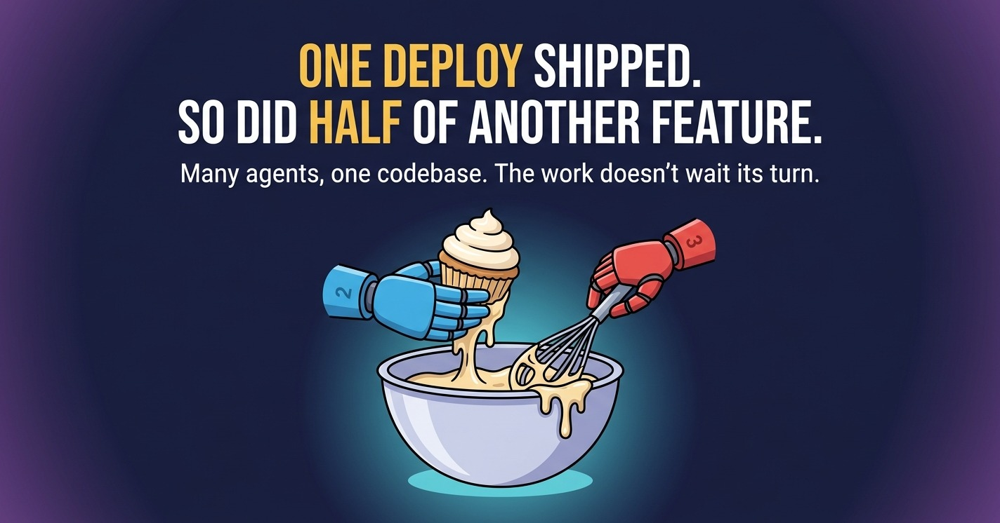

Essay · AI coding agents · One codebase
I've written about how I run several Claude Code sessions on one codebase at once. I never explained why anyone would want to, or why doing it on one codebase is so much harder than giving each agent a project of its own. The work doesn't always wait its turn, and the apps aren't really separate. One day in production made that abundantly clear.

I'm the sole architect on an operations platform that multiple companies use all day. Sales, orders, dispatch, rail cars, documents and accounting are separate screens to the people who use them, but underneath they're one system. They read the same order records, call the same shared code and run on the same database.
The work on a system like that never comes one item at a time. Say an agent is halfway through new features for the sales app, and they reach into code the sales app shares with everything else. Then a bug shows up that people are tripping over today, right now. It can't wait for the features to finish.
The low-tech answer is to put the bug fix in line: let the feature's agent wrap up, commit and push, then start the fix. But a fix almost always outranks a feature, so in practice the feature gets wrapped up half-built and goes dormant until the fix is in. Later, someone has to pick it back up and work out what was known, what wasn't, what was being done and what was going to happen next. The same thing happens to me when I'm pulled off a feature myself; agents just hit it more often. Do that a few times a day and the task line limits how much gets done.
So the fix gets its own agent, started while the feature's agent is still working. The same goes for features. A big piece of work, like the rail car screens below, comes in parts that can move side by side, and making each part wait for the last one stretches the line just the same. That's why I run agents in parallel, and running them on one codebase is where it gets hard.
Two agents in two codebases can't hurt each other. Two agents in one codebase share everything.
Give each agent its own project and they're strangers. On one codebase, they share the same files, one working folder, one running copy of the app, one development database, one git history and one road to production. Every one of those is a place where one agent's work can land on top of another's, and neither of them will notice.
The day it went wrong here, it wasn't a fix and a feature. It was two rail car features being built side by side. But the mechanics are the same either way. Swap the second session for an urgent fix and the story only gets worse: the fix ships, and half a feature ships with it.
One session was partway through a change to the shared code that loads an order. That code is used all over the app, including by the form for editing a rail car shipment, and the change was a new feature for that form. It depended on two new database columns that didn't exist yet. There was no release plan for any of it, because the feature was still being built. Its edit sat in the working folder, uncommitted, waiting for the rest of the work.
A second session, building a completely different rail car feature, finished its task and committed with a command that takes every changed file in the folder. The first session's half-done edit went in with it, under the second session's message and task number. The second session had no way to tell that file wasn't its own.
The second session's work was ready, so it was deployed, and the unfinished edit rode along. What reached production was the wrong half. The new code for loading a rail car order now asked the database for the two new columns, but the columns didn't exist, and nothing else of the feature was there: no new fields on the form and no release plan. It was the one part of the feature that depended on every other part.
Every time the form tried to load an order, the query failed on the missing columns. Nobody was using the form yet, so the errors in the log were the only sign.
The obvious move with a bad deploy is to put the old file back. But the swept-up file also held part of the second session's feature, the work that had gone out on purpose that morning, and that feature's new code depended on it. Putting the old file back would have taken the finished feature down to rescue the unfinished one. The two features were knotted together in one file, and there was no clean way to pull them apart in a hurry.
That left rolling forward and putting out the rest of the feature properly, right then. A release plan got written on the spot, the two columns went into the production database, and the rest of the feature followed, about half an hour after the sweep was spotted. The form opened again.
I wasn't ready to roll it out. It still had a way to go, and the rest of the day went to finishing it in production instead of in development. That included a fix for part of the new screen that showed to everyone instead of only the users it was meant for.
Each step was correct on its own: the edit was fine, the second session's work was ready, and the deploy shipped exactly what was committed. The broken form was the visible damage. The bigger cost was that someone else's deploy decided when my feature went live.
A rule against committing every changed file was already written down when it happened. It had already gone wrong once before, to a session that had read the rule. That's what convinced me that a warning in the instructions isn't enough when the mistake is one keystroke inside an otherwise normal habit.
What fixed it was making the collisions impossible, or at least loud.
A commit that takes every changed file is refused outright. A commit that includes lines another session wrote and hasn't committed yet is refused too, because a hook records what each session adds. Any task that changes app code gets its own folder on its own branch, so a feature in progress and an urgent fix never share a working copy, and if they touch the same lines it shows up as a merge conflict instead of lost work. And the deploy tool refuses to ship a file that also carries another task's unfinished change. It says what else would ship and stops, so a fix can't take half a feature to production with it.
The hooks that refuse a bad commit or an early deploy are their own case study.
A fix that can't wait shouldn't force a feature to go dormant. That's the case for a second agent, not raw speed.
If they share code, data or a deploy, an agent working on one can break another. Count what your agents share before you start a second one.
In a shared folder, anything not committed belongs to whoever commits next. Give each task its own folder, and refuse commits that take what isn't yours.
A deploy that ships whatever is in a file will one day ship someone else's half-finished change. Have it refuse a file that carries another task's work.
A rule the agents have read still fails in the moment. A hook that refuses the command doesn't.
The hooks that refuse a bad commit or an early deploy: five AI agents, one live codebase. The tooling is in claude-agent-ops.